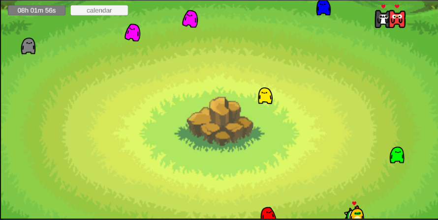
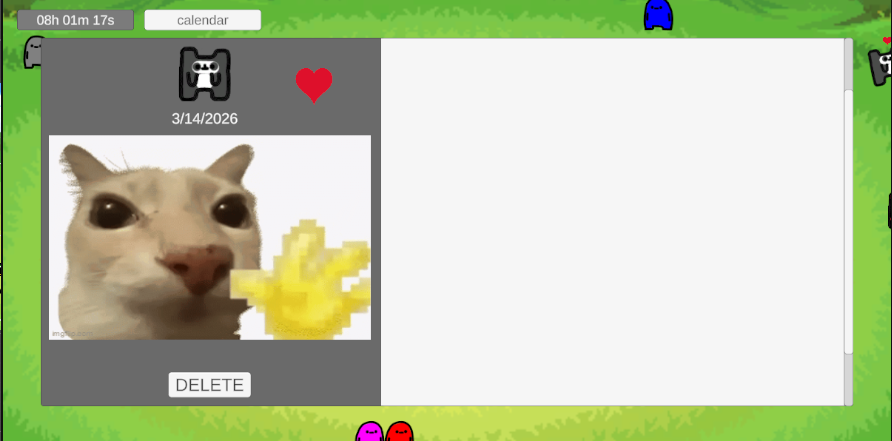
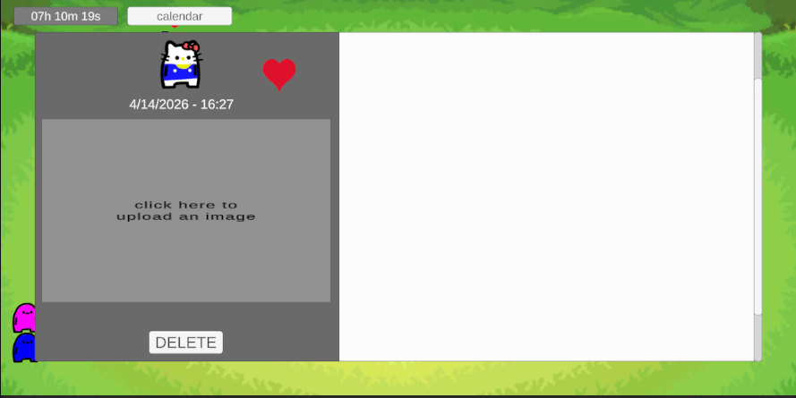

entry #6: glhf-grow-desktop-journalapp
a bit more quality of life changes for the project.
got a bit of feedback from some friends and was glad cause one of them
gave good feedback in terms of a feature. it was also somewhat of a
big one so i think this will be my next milestone depending on if i
have the time or not. but it's to add a categorization system into it.
i was kinda thinking about it at the beginning but due to
time-constraints just chose not to, but with this official request i
think it'll be good to add.
but before moving onto this i wanted to create or start a bit small
first before diving into this system. so for this week started working
on a small 'favorite' system where now the user can favorite specific
days and it'll now show a little heart on the character and on their
details page. this one was a bit tricky to implement as i was having
difficulties differentiating favoriting between the details page and
through the menu for some reason, but was able to get it in the end by
unifying them both. on top of that this was also giving me an idea of
creating a small like accessories system for these little dudes. could
be fun to make in the future.


and also added a time feature on the details page just showing when they were created, for fun. was always thinking about adding this and finally got around to it.
